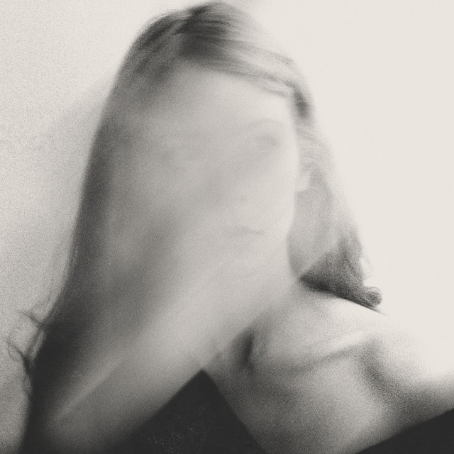

Terraplana - Olhar Pra Tras



Información del álbum facilitada por discogs.com:
Fecha de lanzamiento: 2017
Géneros: Rock
Estilos: Shoegaze, Dream Pop
Pais: Brazil
Sello: Not On Label (Terraplana Self-released)
Bass - Stephani Heuczuk
Drums - Wendeu Silverio
Vocals, Guitar - Matheus Teles
Vocals, Guitar, Synthesizer, Recorded By, Mixed By, Mastered By, Photography By - Vinícius Lourenço
Tracklist:
- Intro 1:21
- Ambedo 3:50
- Lamento 4:13
- Interlúdio 1:29
- Virou Crime 3:48
- Fall 4:32